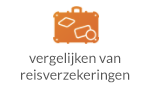
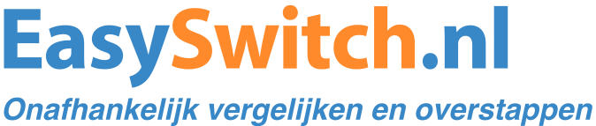
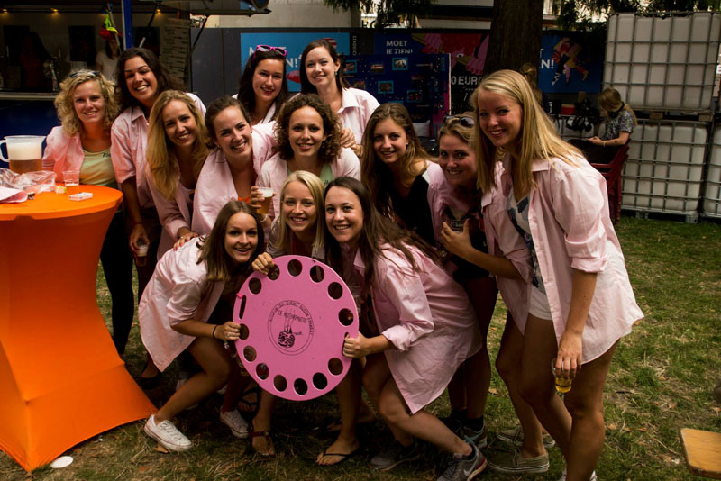
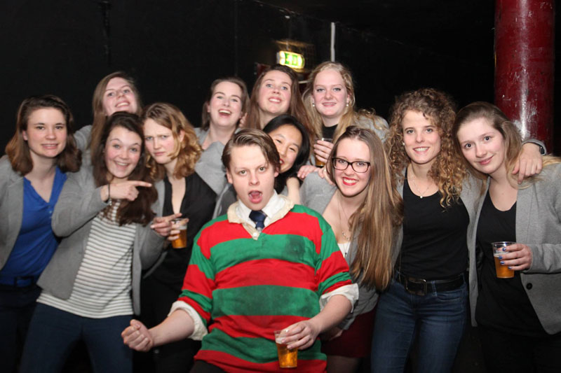

Unitas S.R. is een vereniging met ongeveer 1000 leden en is gestoeld op een diversiteit aan verbanden met elk een uniek karakter. Zo vormen eerstejaars leden in het eerste jaar een jaarclub waarmee je samen elke dinsdag eet, borrels en feesten meepakt op de Sociëteit, studeert in de Universiteitsbibliotheek, en na 5 jaar misschien wel op lustrumreis gaat. Naast jaarclubs organiseren zo goed als alle andere verbanden activiteiten die uiteenlopen van toneelvoorstellingen, culturele reizen, hockeytoernooien tot bedrijvendiners met oud-leden. Hieronder kun je over elk soort verband informatie vinden.
Jaarclub
Menig lid van Unitas S.R. beschouwt de jaarclub als waardevolste verband tijdens en na zijn lidmaatschap. In het eerste jaar vorm je met gemiddeld 8 tot 15 leden uit hetzelfde jaar met hetzelfde geslacht een jaarclub. Samen met je jaarclub eet je elke dinsdag, pak je borrels en feesten mee op de sociëteit, studeer je in de Universiteitsbibliotheek, sport je en plan je andere dingen in als vakanties en 21-diners. De meeste jaarclubs hebben vele jaren na het lidmaatschap nog goed contact, zijn nog steeds goed bevriend en zien elkaar regelmatig.
Commissies
Unitas S.R. biedt haar leden een divers aanbod aan activiteiten en evenementen waardoor er bijna elke avond wel iets te doen is op de sociëteit. Het merendeel van de grote activiteiten wordt georganiseerd door commissies. Iedere commissie heeft haar eigen functie en dient een verschillend doel. Van het uitbrengen van een professioneel eigen blad tot het organiseren van het jaarlijkse gala met 700 gasten. Onder begeleiding van het Dagelijks Bestuur vergadert een commissie wekelijks, hebben ze een eigen begroting en dragen ze een grote verantwoordelijkheid op de vereniging. Momenteel kent de vereniging zo’n 25 commissies.
Verticalen
Zoals de naam al zegt is een verticale een verticaal verband dat bestaat uit meerdere jaarclubs. Elk jaar sluit een jaarclub uit het nieuwe jaar zich aan bij de verticale. Elke verticale heeft een bestuur dat evenementen organiseert. Momenteel kent Unitas 5 mannen en 10 vrouwen verticalen.
Disputen
Disputen, ook wel colleges genoemd, bestaan uit alleen mannen of vrouwen uit verschillende jaren. Ieder dispuut heeft zijn eigen karakter. Zo zijn er bijvoorbeeld zangdisputen en disputen voor leden uit Brabant. Momenteel kent Unitas S.R. 4 mannelijke en 3 vrouwelijke disputen.
Studiesubverenigingen
Unitas S.R. kent twee soorten subverenigingen, namelijk studiesubverenigingen en ontspanningssubverenigingen. Deze verbanden organiseren mooie borrels maar voornamelijk activiteiten die gerelateerd zijn aan de subvereniging. Studiesubverenigingen organiseren zo hoofdzakelijk studiegerelateerde activiteiten als lezingen, workshops en uitstapjes.
Ontspanningssubverenigingen
Ontspanningssubverenigingen houden zich bezig met het organiseren van activiteiten voor mensen met een bepaalde interesse. Zo heeft Unitas S.R. bijvoorbeeld subverenigingen voor mensen die het leuk vinden om te zeilen, dansen, debatteren, paardrijden, muziek te maken, te kaarten of zich uit te leven op het toneel.
Unitas voetbalteams en hockeyteams
De vereniging kent meerdere Unitas voetbal- en hockeyteams die al een aantal jaar bestaan en vaak op zoek zijn naar nieuw aanstormend talent!
ICV (relatie met zuster gezelligheidsverenigingen buiten Utrecht)
Het Intercity-verbond is een convenant tussen vier studentenverenigingen uit Amsterdam, Leiden, Rotterdam en Utrecht. Naast Unitas S.R. zijn de verenigingen Unitas Studiosorum Amstelodamensium (kortweg Unitas Amsterdam, of afgekort U.S.A.), Societas Studiosorum Reformatorum Roterodamensis (kortweg S.S.R.-Rotterdam, of afgekort S.S.R.-R.), en de Leidse Vereniging voor Studenten Augustinus (kortweg Augustinus) aangesloten.
Het Intercity-verbond is opgericht in 2004 en zorgt voor goed contact tussen de verenigingen onderling en voor een vaste activiteitenagenda met onder andere een eerstejaarsfeest, een legendarische biercantus en een open podium. Leden van de intercityverenigingen zijn bij deze feesten welkom op één van de verenigingen.
F.U.G.
Unitas S.R. is aangesloten bij de Federatie van Utrechtse Gezelligheidsverenigingen (F.U.G.). De Federatie van Utrechtse Gezelligheidsverenigingen is een overkoepelend orgaan, dat de zeven grote gezelligheidsverenigingen die het Utrechtse studentenleven rijk is, vertegenwoordigt. De F.U.G. zorgt voor een goede onderlinge communicatie tussen de verenigingen en behartigt hun gemeenschappelijke belangen, bijvoorbeeld op het gebied van promotie en contact met de Hogeschool en Universiteit en binnen de gemeentelijke politiek.
De Federatie bestaat uit twee besturen, namelijk het algemeen bestuur (AB) en het dagelijks bestuur (DB). Het Dagelijks Bestuur bestaat uit vijf bestuurders die de FUG vertegenwoordigen in het studentenleven. Zij overleggen tweewekelijks met het AB, dat bestaat uit een bestuurslid van iedere lidvereniging, dat de wensen van de individuele verenigingen kenbaar maakt bij het DB. Voor meer informatie over de F.U.G. klik hier.
L.k.v.V.
Tevens is Unitas S.R. aangesloten bij de Landelijke Kamer van Verenigingen (L.K.v.V.). Het hoofddoel van de LKvV is het behartigen van de belangen van de aangesloten lidverenigingen en de twaalf aangesloten Plaatselijke Kamers van Verenigingen (PKvV’s).Dit doet zij door middel van verschillende activiteiten zoals onder andere het organiseren van congressen, informatie uitwisseling tussen de verschillende verenigingen, onderzoek doen naar relevante onderwerpen en het voeren van een politieke lobby bij o.a. de Tweede Kamer. Voor meer informatie over de LkvV klik hier.


Koop je tickets
Geef je op voor eten
Neem contact op
Lid worden
Commissie voorkeuren